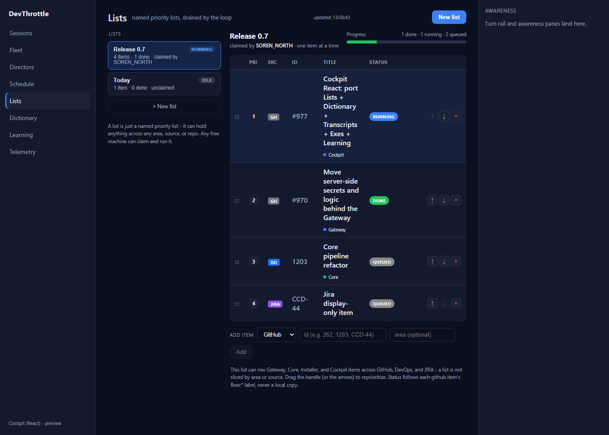
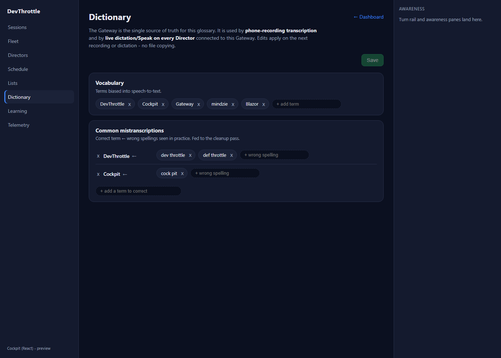
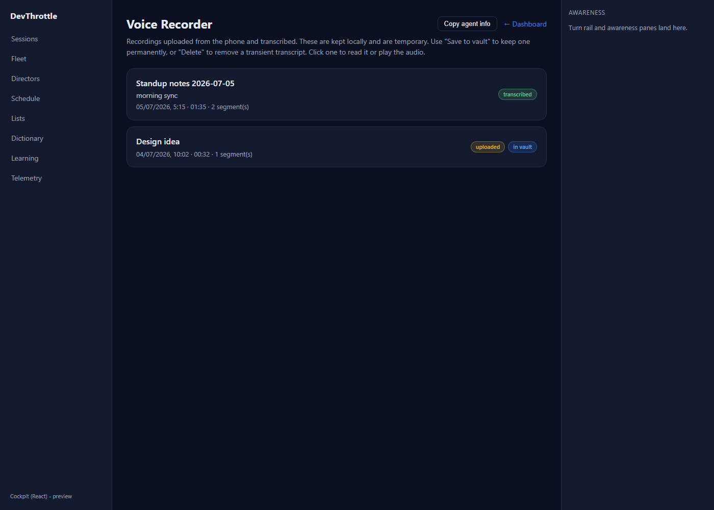
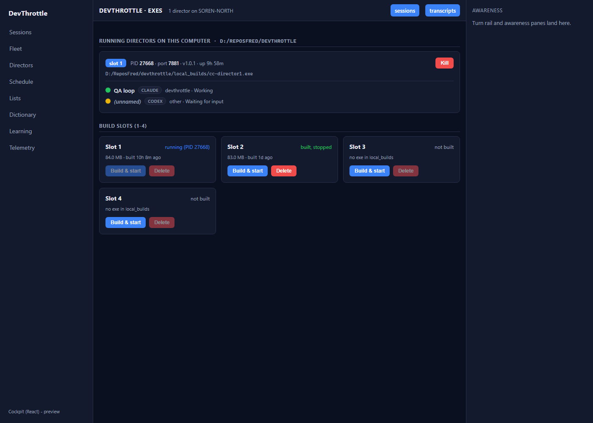
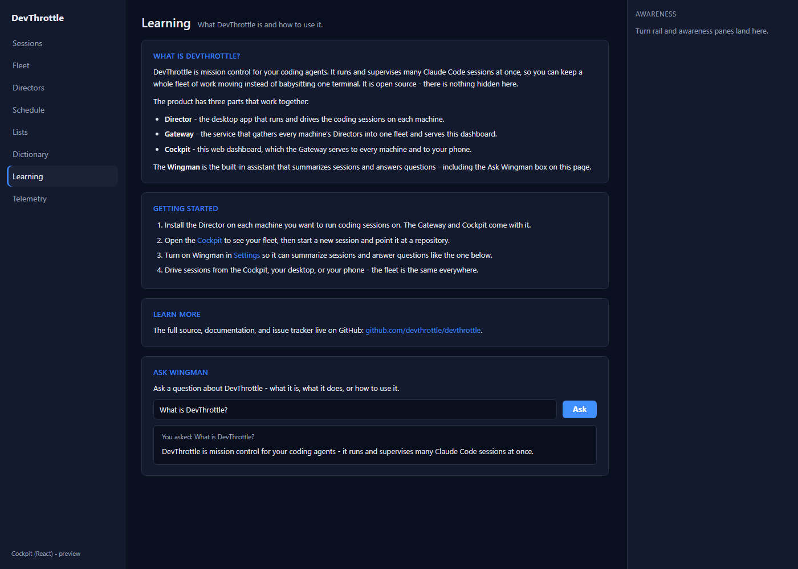

Title: Cockpit React: port Lists + Dictionary + Transcripts + Exes + Learning
PR: #1011 (branch issue-977-cockpit-data-pages)
Epic: #967 (Rebuild the Cockpit in React)
QA method: Independent verification in an isolated git worktree. The QA Agent built every gate
itself, scanned the shipped bundle it built, and rendered/drove the five pages from that bundle. The
Developer report and its screenshots were NOT trusted or reused.
| Gate | Command | Result | Verdict |
|---|---|---|---|
| Cockpit build (tsc --noEmit + vite) | npm run build --workspace @devthrottle/cockpit | tsc clean; vite built 90 modules, 0 errors | PASS |
| Ingress lint rule | npm run lint (eslint .) | exit 0, no absolute http/https/ws/wss literals in client code (one documented public-docs-link exception) | PASS |
| Workspace typecheck (baseline check) | npm run typecheck | Only the 7 pre-existing awarenessClient.test.ts errors (tracked as #1010). Cockpit and mobile typecheck clean. No NEW failure added by #977. | PASS |
| Gateway release target (runs cockpit build + stages) | dotnet build CcDirector.Gateway.csproj -p:RunCockpitBuild=true -c Release | Build succeeded. 0 Warning(s), 0 Error(s). Staged 3 files into wwwroot/c. | PASS |
| Full solution | dotnet build cc-director.sln | Build succeeded. 0 Warning(s), 0 Error(s). | PASS |
| Check | Expected | Actual (from the bundle QA built) | Verdict |
|---|---|---|---|
| No GitHub token in shipped bundle | No ghp_/gho_/ghs_/github_pat_ token literal | None found in dist/assets/index-*.js | PASS |
| No direct GitHub API call from browser | No api.github.com / Authorization: Bearer for GitHub | None found. Only external display links (github.com repo link, library docs) present. | PASS |
| Per-item title + flow:* status via Gateway | Resolved through the Gateway item-status endpoint | resolveItemStatus() calls GET /gateway/lists/item-status?source=&id= (root-relative). Rendered Lists page shows the resolved titles and DONE/RUNNING/QUEUED/NEEDS-YOU badges from that endpoint. | PASS |
Each page was served from the freshly built bundle by an isolated local server (never the user's live Gateway or Directors) with representative Gateway responses injected, then rendered and driven with Playwright. Every write path was exercised and confirmed to fire the correct root-relative Gateway request.
Expected: list cards with running/idle + counts, a per-item table (Pri, Src, Id, Title, Status)
with item-status from the Gateway, drag/arrow reorder, remove, add-item row, create-list modal.
Actual: all present and correct; item titles + flow badges resolved via
/gateway/lists/item-status. PASS

Expected: Vocabulary chips with remove + add, Common-mistranscriptions term-to-variant map,
dirty-state Save. Actual: all present; Save fires PUT /ingest/dictionary with the
edited glossary. PASS

Expected: recording cards (title, subtitle, date, duration, segments, state + in-vault badges),
Copy agent info, and per-card expand with Play audio / Copy path / Save to vault / Delete / inline
Title-Subtitle-Summary edit + Save details. Actual: all rendered from
/ingest/recordings; card list and badges correct. PASS

Expected: running Directors on this computer with sessions (colored dot, agent pill, state), Kill; build slots 1-4 with status, size, built-time and Build & start / Delete (disabled states correct). Actual: all present; running slot's Build disabled, unbuilt slots' Delete disabled. PASS

Expected: static What-is / Getting-started / Learn-more content plus an Ask Wingman box.
Actual: content rendered; the ask fired POST /wingman/ask-devthrottle and the answer
rendered ("You asked ..." + answer). PASS

POST /lists {"name":"QA Verify List"}
POST /lists/Release%200.7/items {"source":"github","id":"999","area":"Cockpit"}
PUT /ingest/dictionary {"vocabulary":[...,"QaNewTerm"],"commonMistranscriptions":{...}}
POST /wingman/ask-devthrottle {"text":"What is DevThrottle?"}
All four are root-relative to the Gateway front door, carry the device Bearer, and use no absolute URL and no GitHub token.
Conclusion: Every acceptance criterion is met with proof. Recommended: flow:done, squash-merge #1011.